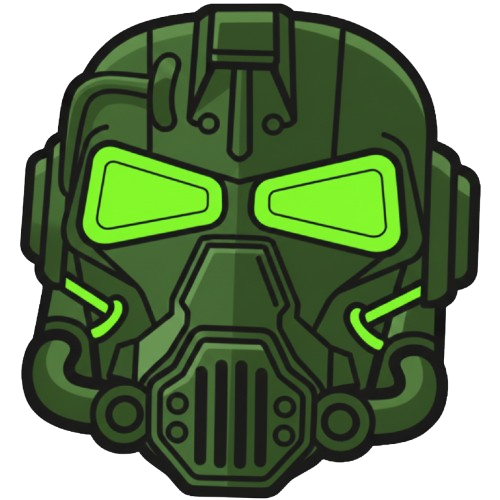

[ "Minha História" ]
> Iniciando processo de recuperação de memórias...
Meu nome é Lincoln Borsoi Moreira, nasci dia 01/02/2006 em Caçapava-SP onde moro até hoje e explicarei um pouco sobre mim nessa seção do site.

[ Gostos Pessoais ]
> Um jovem(sempre serei jovem!) que gosta muito de games e que infelizmente envelhece por conta do time do coração...
Desde que me conheço por gente eu sei de duas coisas, 1° o Santos F.C é o maior time do Brasil e 2° eu sou um "nerdola" que está na programação atualmente porque o pequeno Lincoln estava lá "fuçando" o notebook velho do seu pai a procura de jogos ou formas de se divertir

[ Log de objetivos de vida ]
>Trabalhar na área que amo e com ela ter estabilidade financeira para mim e para minha familia
>Conhecer vários lugares do mundo e suas diversas culturas